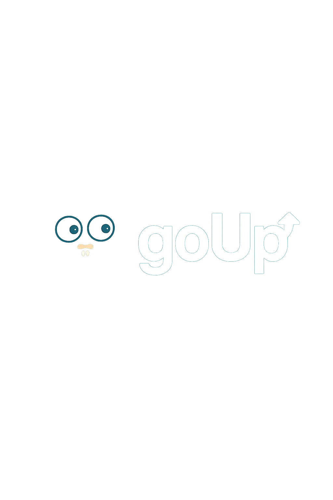

It is (1) used to learn Go and (2) to monitor servers from a configuration file (services.yml)
It's queries a server and ensures the server respond's with a 200 with a pretty web UI to boot
This is a side project but like with all thing's if it's popular or useful enough it may develop into more